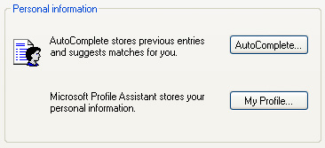
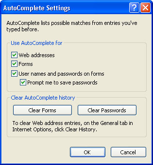
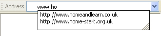

Free
computer Tutorials
|
Free
computer Tutorials
|
|
 home home |
Stay at Home and Learn | ||||
Internet Options - AutoComplete
For this tutorial, you'll need the Internet Options dialogue box. To see how to bring it up, click this page (opens in a new windows): How to bring up the Internet Options Dialogue Box
Internet Explorer has a feature that allows you to type in the first few characters of form field and it will finish the rest of it for you. For example, if a text box on a from is asking for your email address, then you would only need to type in the first few letters. Internet explorer would then add the rest of it. This feature is called AutoComplete. You can turn this off and on, depending on your tastes. You can also clear any entries that have already been added. We'll see how it works now.
So click the Content tab of the Internet Options dialogue box. Then look for this area:  Click the AutoComplete button to bring up the following:  As you can see, we've checked all the options in the image above. To see what effect this has, here's what happens when you have a tick in the box for "Web addresses". In the next image, we've started to type the address of our web site in Internet Explorer (home and learn):  As soon as we start to type the address, we get a drop down list of other web sites that we've visited. Only the ones that start with "www.ho" are on the list. If we typed "www.homea" then the second one would disappear. To quickly select our address, we can either click on it with the left mouse button, or use the down arrow key on the keyboard, and then press enter. Internet Explorer would then go to that address. If you don't want the drop list to appear at all, take the tick out of the Web Addresses box on the AutoComplete settings. To clear the drop down list of web address, you need to be on the General tab of the Internet Options dialogue box. Then click the Clear History button. AutoComplete works the same way for textboxes on forms. Start typing the first few characters, and Internet Explorer will finish the rest of it for you. This can save you time if you have to type say a long email address to login. But there are some security concerns. Public computer may suggest your login details to others in a drop down list. Or if another person uses your computer, they may be able to see your details. Or if the worst happens and someone steals your laptop, then AutoComplete would be a great help to them filling out all your cherished logons! If you put a tick in the box "Prompt me to save passwords" then Internet Explorer will display a message box asking you if you'd like to save the password that you have entered. Passwords are saved in encrypted format, and are not displayed for all to see. But if the username is typed correctly, the password will be automatically filled in. If you want to start afresh with login and form details, then click the two buttons Clear Forms and Clear Passwords. All of the details previously stored will then be erased. If you don't want any of this, then uncheck all the boxes in the section Use AutoComplete For. This is the safest option.
|
|||||
|